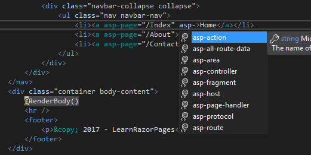
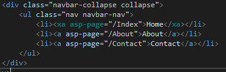

标签助手是可重用的组件，用于在 Razor 页面中自动生成 HTML。 标签助手针对特定的 HTML 标签。 ASP.NET Core 框架包括许多针对许多常用 HTML 元素以及一些自定义标签的预定义标签助手：
- 锚定标签助手
- 缓存标签助手
- 环境标签助手
- 表单操作标签助手
- 表单标签助手
- 图片标签助手
- 输入标签助手
- 文本标签助手
- 链接标签助手
- 选项标签助手
- 部分标签助手
- 脚本标签助手
- 选择标签助手
- Textarea 标签助手
- 验证标签助手
- 验证摘要标签助手
Razor 页面中使用的标签助手是作为 ASP.NET MVC Core 的一部分引入的，可以在 Microsoft.AspNetCore.Mvc.TagHelpers 包中找到，该包是 Microsoft.AspNetCore.All 元包。
也可以创建您自己的自定义标签助手以在无限范围内自动生成 HTML 场景。
下图说明了一个 Anchor 标签助手，它针对 HTML 锚定 <a> 标签：

每个标签助手用附加属性扩充目标元素，前缀为 asp-。
在上图中，您可以看到标记中的 asp-page 属性应用了一个值，并且 Intellisense 显示了其他属性（在提供此功能的 IDE 中）。
一些属性特定于 Razor Pages，一些属性特定于 MVC。 其他与两个开发平台都相关。
启用标签助手
标签助手是一个选择加入的功能。 默认情况下，它们对页面不可用。
它们是通过向页面添加 @addTagHelper 指令来启用的，或者更常见的是添加到 _ViewImports.cshtml 文件：
@addTagHelper *, Microsoft.AspNetCore.Mvc.TagHelpers
@addTagHelper 指令后跟通配符 (*) 以指定应使用在指定程序集中找到的所有标记助手，然后是包含该程序集的名称 提供了标签助手。
在大多数情况下，程序集的名称是您的 Razor 页面项目的名称，除非您在单独的项目中定义标签助手。
如果您想启用此站点中定义的标签助手，该站点有一个名为 LearnRazorPages.csproj 的 .csproj 文件，您可以这样做：
@addTagHelper *, LearnRazorPages
注意：提供给 @addTagHelper 指令的值没有用引号括起来。
当 ASP.NET Core 处于 Release Candidate 2 时，此要求已被删除。但是，如果您愿意，您仍然可以将值括在引号中：
@addTagHelper "*, Microsoft.AspNetCore.Mvc.TagHelpers"选择性标签处理
一旦启用了标签助手，它将处理它所针对的标签的每个实例。 这可能不是可取的，
特别是在标签没有需要处理的特殊属性的情况下。 可以有选择地选择加入或退出标签处理。
您可以使用 @addTagHelper 和 @removeTagHelper 指令选择加入或退出处理特定类型的所有标签。
不是将通配符传递给 @addtagHelper 指令，您可以传递要启用的标签助手的名称：
@addTagHelper "Microsoft.AspNetCore.Mvc.TagHelpers.AnchorTagHelper, Microsoft.AspNetCore.Mvc.TagHelpers"
The only tag helper that is enabled in the previous snippet is the AnchorTagHelper. This approach is suitable if you only want to enable a small selection of tag helpers. If you want to enable most of the tag helpers in a library, you can use the @removeTagHelper directive to filter out tag helpers having enabled all of them. Here's how you would disable the AnchorTagHelper using this method:
@addTagHelper "*, Microsoft.AspNetCore.Mvc.TagHelpers"
@removeTagHelper "Microsoft.AspNetCore.Mvc.TagHelpers.AnchorTagHelper, Microsoft.AspNetCore.Mvc.TagHelpers"
You can opt individual tags out of processing by placing the ! prefix just prior to the tag name. The following example illustrates how that is applied to an anchor tag to prevent it being processed unnecessarily:
<!a href="https://www.learnrazorpages.com">Learn Razor Pages</!a>
The prefix is placed in both the start and end tag. Any tag without the ! prefix will be processed by an associated tag helper . The alternative option is to opt specific tags in to processing at parse time. You achieve this by registering a custom prefix via the @tagHelperPrefix directive and then applying your chosen prefix to tags you want to take part in processing. You can register your prefix in the _ViewImports.cshtml file, where you enabled tag helper processing:
@tagHelperPrefix x
You can use pretty much any string you like as a prefix. Then you apply it to both the start and end tag, just like the ! prefix:
<xa asp-page="/Index">Home</xa>
Only those tags that feature the prefix will be processed. The image below illustrates how Visual Studio shows enabled tag helpers with a different font:

For the sake of clarity, most developers are likely to use punctuation to separate the prefix from the tag name, for example:
@tagHelperPrefix x:<x:a asp-page="/Index">Home</x:a>这应该可以减少任何视觉混淆，尤其是对于设计人员查看 HTML 内容时。